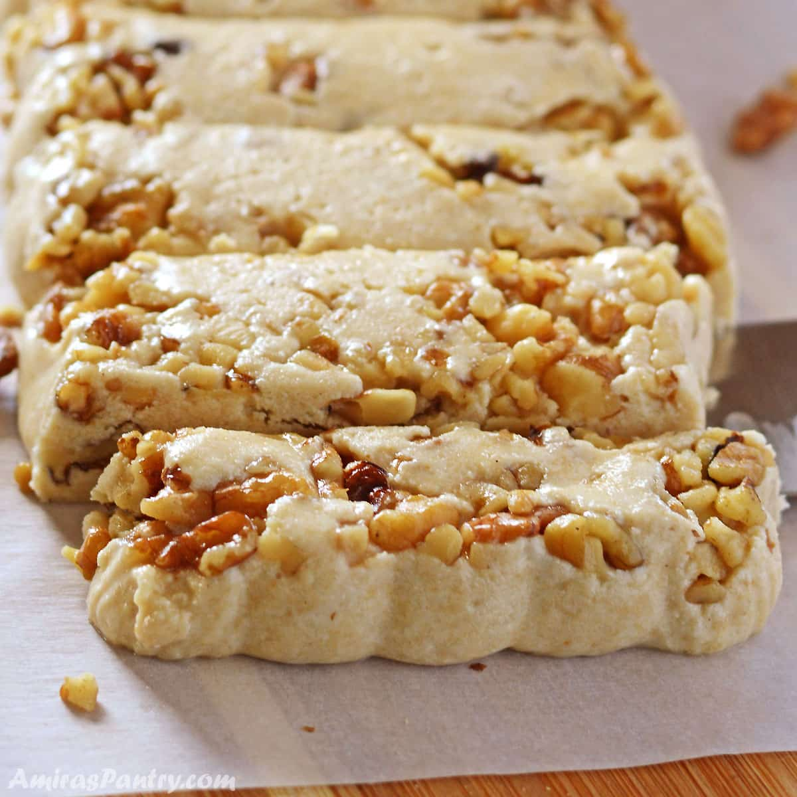

Tahini Halvas

Description
Tahini halvas is a delightful Middle Eastern sweet treat with a rich, nutty flavor and a smooth, crumbly texture. Made primarily from tahini (sesame paste), this confection is sweetened with honey or sugar and often flavored with vanilla or cinnamon. It’s a perfect balance of sweetness and earthy sesame notes, making it an irresistible and satisfying dessert or snack.
Ingredients
- tahini
- confectioner's suger
- dry milk
- vanilla extract
- nuts: any variety
Steps
- In a big bowl, combine powdered sugar, dry milk and flavor of choice. Pour in tahini paste.
- Mix everything until very well combined, the texture will be bit sandy. You can test taste your halva at this point to make sure you like it. Mix in nuts if using.
- Brush an aluminum loaf pan, or you can use silicon pan, with oil and sprinkle some chopped nuts at the bottom if you are using.
- Scoop the mixture into the container and press with your hands to mold. Let it set in the fridge or on the counter for 24 hours until firm enough and molded.